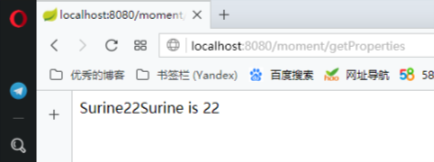
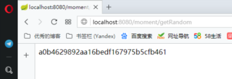
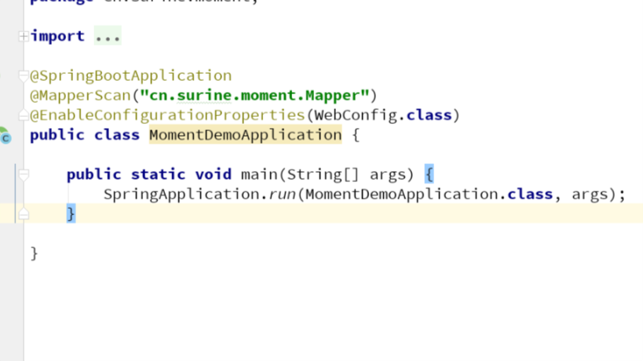
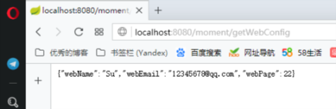

自定义属性及加载
经历了一个快速入门的环节，相信你已经大致了解了一些的基础内容，接下来我们将体验一些比较枯燥的内容。
本片内容叫做自定义属性及加载，
前面我们用到一个application.properties的配置文件，包括数据库的一些信息，我们都是在这里面配置的。
我们在这个文件里面添加这样几行代码。（我用的依然是2-5实战里的moment_demo）
1 | #自定义属性 |
我们分别来看这几行。
第一行，cn.surine.moment可以随便写，我们叫做他prefix（前缀,注意不能写下划线，大写字母等特殊字符，会出现error）
name是属性名，后面的surine即属性的值
同理第二行，prefix + 属性名 。
第三行有所不同，不同之处，也就是属性值不同，${ xxx } 是一个占位，相信有编程基础的你可以理解，${cn.surine.moment.name}就是surine，而${cn.surine.moment.age}就是22，那other这个属性，值就是surine is 22。
所以我们来调用一下看看。
我们新建一个文件，这里可以没那么严格的包位置，我放在了Entities这个包里面。
1 | package cn.surine.moment.Entities; |
最后，我在Controller里面添加了如下内容
1 |
|
首先前两行，自动注入，很熟悉了，可以直接导入你要用的类。
下面的，也很熟悉，访问路径配置，然后方法体内部写返回的内容，是把我刚才定义的几个属性返回去了。

可以看到我访问对应路径已经出现效果了。说明我们的属性配置和访问没有问题
进一步探索
1 | (value = "/getRandom") |
我在Controller里面添加了这些内容，当然刚才我们已经注入了PeopleEntity，所以不需要再注入了。
可以看到我们调用了getString方法。
那么我们来看看,PeopleEntity里面加入了如下内容。
1 | ("${cn.surine.moment.string}") |
很正常，定义了属性和get/set方法，然后我们自然想到去看cn.surine.moment.string这个属性有什么不同。
1 | # 随机字符串 |
这个属性的作用是返回一串随机字符串，调用的方式是固定的，就写${random.value}，场景也很常见，比如生成token啊之类的。
同样类似的属性还有
1 | # 随机int |
我们来看看效果。

继续探索
我们首先在pom中导入一个依赖，然后才能用接下来的方法来实现配置。
1 | <dependency> |
在属性文件中，添加：
1 | cn.surine.moment.webName=Su |
我们新定义了三个属性，name，email，page ，然后他们的prefix都是cn.surine.moment。
然后我在Entities里新建了一个WebConfig类，内容如下
1 | package cn.surine.moment.Entities; |
接下来，我们给MomentDemoApplication中添加一句
1 | (WebConfig.class) |
把对应的类配置进去

最后Controller里面的内容就写
1 |
|
照例注入。
返回WebConfig对象。
测试结果如下。

对于自定义属性及配置可以将属性抽离，而且对于正式开发，属性不同的情况下比较方便修改。后面会有不同属性文件的介绍。